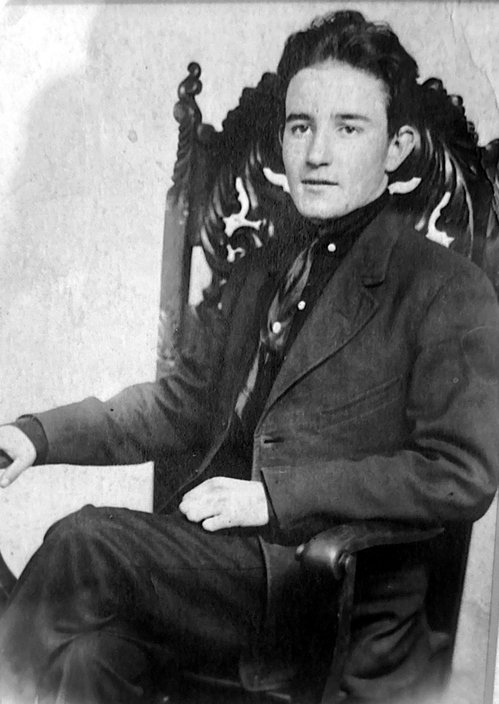
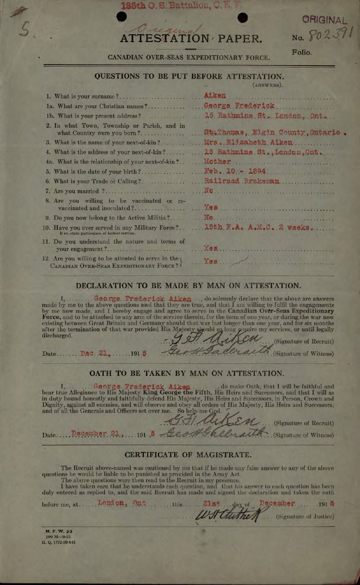
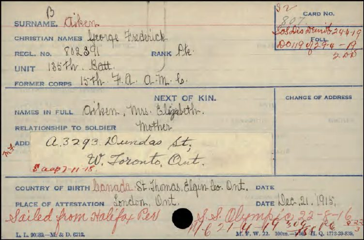
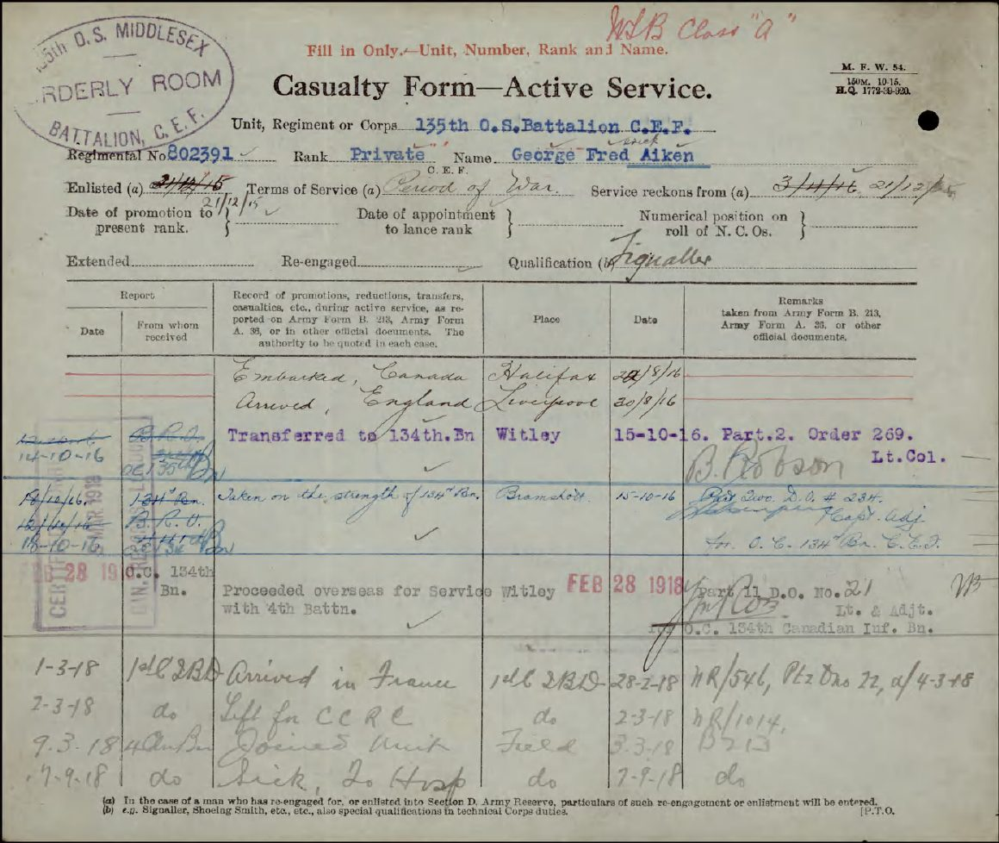
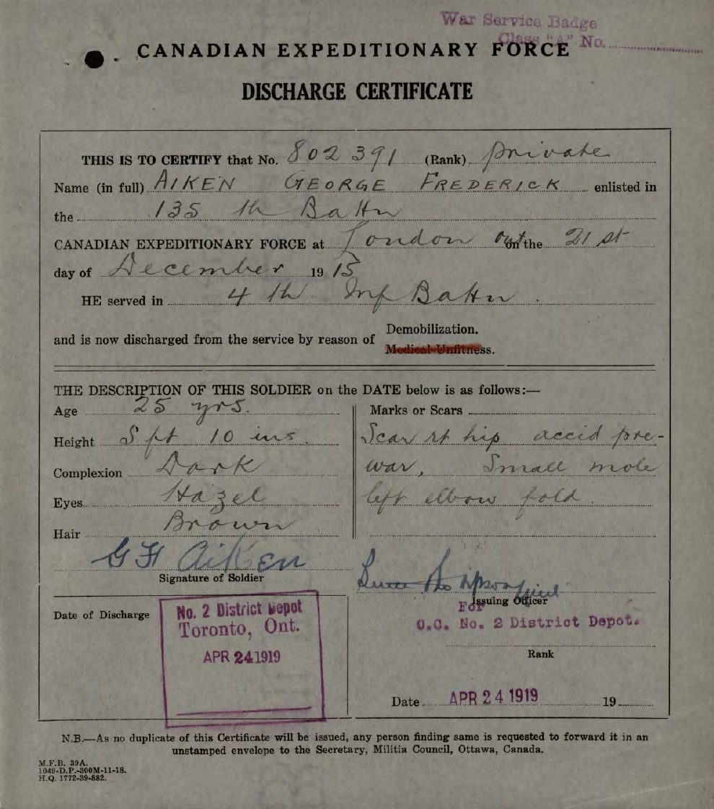
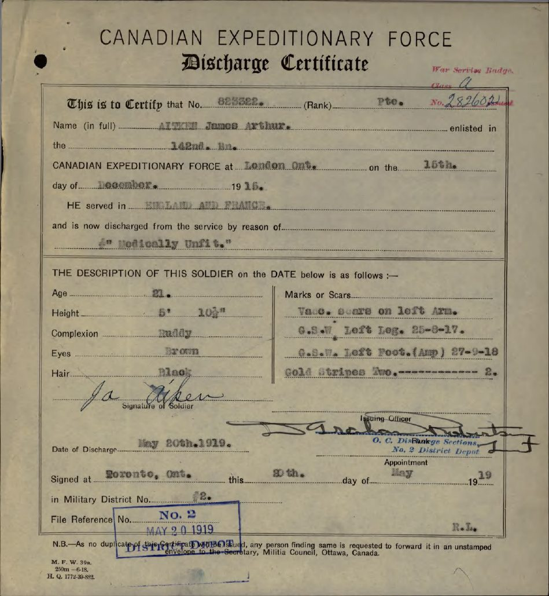

Private and signaller, No. 802391
4th Canadian Infantry Battalion
Canadian Expeditionary Force, 1915–1919
Born in St. Thomas, Ontario, in 1894. A railroad brakeman who crossed the Atlantic, fought through the last year of the Great War, and came home.

Fred was born on February 10, 1894, in Elgin County, Ontario. His army papers say St. Thomas; the family remembers the hamlet of Eagle, nearby. He grew up with his brothers and moved with the family to London, where by 1915 he was working as a railroad brakeman.
Everything on this page comes from his army service file, which records him the day he walked in to enlist.
Four days before Christmas, Fred enlisted in London with the 135th (Middlesex) Battalion and was passed fit for overseas service. He swore the oath and signed his name twice: G. F. Aiken.
His only earlier service was two weeks with the 15th Field Ambulance of the Army Medical Corps.
From then until he sailed, he trained in Ontario. When he went overseas he arranged for $20 of his pay every month to go to his mother. He was earning about $1.10 a day.

On August 22, 1916, the 135th sailed from Halifax aboard the SS Olympic, the sister ship of the Titanic, and reached England on August 30.
That October Fred was transferred to the 134th Battalion (48th Highlanders) and spent sixteen months training at Witley and Bramshott camps. The 134th belonged to the 5th Canadian Division, which was held in England and never sent to the front.
Somewhere in those months he qualified as a signaller.

In February 1918 the 5th Division was broken up to reinforce the Canadian Corps. Fred left Witley on February 28, landed in France, and in early March joined the 4th Canadian Infantry Battalion “in the field”. The 4th was part of the 1st Brigade, 1st Canadian Division.
Battalion signallers kept the front line talking to headquarters. They laid and mended telephone wire, often under shellfire, and passed messages by lamp, flag and runner.
He served with the 4th for thirteen months, by his own count.

The 4th (Central Ontario) Battalion was raised at Valcartier in September 1914 from Hamilton, Brantford, Brampton, Aurora and Niagara Falls. It sailed with the First Contingent and fought in nearly every major Canadian battle: Ypres in 1915, the Somme, Vimy, Hill 70 and Passchendaele.
By the time Fred arrived in March 1918 it was a veteran unit, and few of its original 1,100 men were still in the ranks. He was one of the reinforcements who kept it at fighting strength for the final year.
A battalion at full strength was about 1,000 men in four rifle companies. The 4th served in the 1st Brigade beside the 1st, 2nd and 3rd Battalions. The 1st Canadian Division held three such brigades, and the Canadian Corps four divisions.
In 96 days the Canadian Corps, about 100,000 strong, met and defeated elements of 47 German divisions, roughly a quarter of the German army in the west. The file proves where Fred was. The battalion’s diary tells us what he most likely saw. Each line is marked one or the other.
Fred left France on March 22, 1919, and was examined at Bramshott. The doctor wrote: “no disability.” He had gone through the last year of the war without a wound.
He sailed from Southampton with the battalion on April 15, once again on the Olympic, and landed at Halifax on April 21. He was discharged in Toronto on April 24, 1919, by reason of demobilization, and went home to his family on Dundas Street West.
He was awarded a Good Conduct Badge and received a war service gratuity of $420.

Roughly 6,000 kilometres each way. Tap a marker for what happened there.
The ground the 4th Battalion covered while Fred was on its strength, from the Vimy front to Amiens, back to Arras, and east toward Cambrai and Mons.
Canada’s Hundred Days, August 8 to November 11, 1918. Fred’s battalion was one of 48 infantry battalions in the Canadian Corps.
Figures from Veterans Affairs Canada, “The Last Hundred Days,” and its First World War summaries. They describe the Canadian Corps as a whole, not Fred’s battalion alone.
| Feb 10, 1894 | Born in St. Thomas, Elgin County, Ontario |
| Dec 21, 1915 | Enlisted at London, Ontario, 135th (Middlesex) Battalion |
| Aug 22, 1916 | Sailed from Halifax on the SS Olympic |
| Aug 30, 1916 | Arrived in England |
| Oct 15, 1916 | Transferred to the 134th Battalion, Witley and Bramshott |
| Feb 28, 1918 | Proceeded overseas to France for the 4th Battalion |
| March 1918 | Joined the 4th Canadian Infantry Battalion in the field |
| Sept 7, 1918 | Admitted to No. 14 Canadian Field Ambulance, conjunctivitis |
| Sept 29, 1918 | Rejoined the battalion |
| Nov 11, 1918 | Armistice |
| Mar 22, 1919 | Proceeded to England |
| April 1919 | Sailed for Canada on the Olympic |
| Apr 24, 1919 | Discharged at Toronto, demobilization |
Pte. James Arthur Aiken, No. 823322, was Fred’s younger brother. He was born at Fingal, in Elgin County, worked as a core maker in an iron foundry, and stood 5 ft 10½ in, with black hair and brown eyes. Like Fred, he sent $20 a month home to their mother.
James reached the front first. He joined the 14th Battalion (Royal Montreal Regiment) on March 31, 1917, nine days before Vimy Ridge. He was shot in the left leg in mid-August 1917, during the battle for Hill 70, and was back with his battalion by November.
In the fighting for Cambrai, shrapnel shattered his left foot. It was amputated the next day at No. 22 General Hospital, Camiers. His medical records date the wound to October 1, 1918; his discharge certificate says September 27.
He came home on the hospital ship Araguaya and was fitted with an artificial foot at Whitby Military Hospital. The doctors noted he could walk four or five blocks and could not return to foundry work. He was discharged on May 20, 1919, with two gold wound stripes, and later married Gladys. He died on March 3, 1923, still in his twenties.

They left the same house within a week of each other, served in the same division, and came home to the same address. Their files show where their paths ran side by side.
| When | Fred | James |
|---|---|---|
| Dec 1915 | Enlists December 21 in the 135th Battalion | Enlists December 15 in the 142nd Battalion. Both give 15 Rathmine St., London, as home. |
| 1916 | Sails in August and trains in England | Sails in November, spends 17 days in England, and goes on to France |
| 1917 | Training at Witley and Bramshott | Vimy in April; wounded at Hill 70 in August; back at the front in November |
| Jan 1918 | Still in England | Fourteen days’ leave from the front. The files do not say whether the brothers met. |
| Mar 1918 | Joins the 4th Battalion, 1st Brigade | With the 14th Battalion, 3rd Brigade. Both are now in the 1st Canadian Division. |
| Aug 8, 1918 | The 4th passes through the first wave and takes Cayeux | The 14th is in that first wave, attacking at dawn. Fred’s battalion advanced through his brother’s. |
| Sept – Oct 1918 | In the field ambulance until September 27; back in the line on the 29th | Left foot shattered near Cambrai and amputated |
| Winter 1918–19 | Marches into Germany and crosses the Rhine | In hospitals in England, then home by hospital ship in February |
| Spring 1919 | Discharged April 24, home to 1621 Dundas St. West, Toronto | At Whitby Military Hospital until May; discharged May 20. His home address: 1621 Dundas St. West. |
From both men’s service files. That the two battalions fought on the same ground on August 8 is from the record of the battle; whether the brothers saw each other that day is not recorded.
The army’s paperwork follows Fred for a few months after discharge. In April 1919 he went home to 1621 Dundas Street West in Toronto, near his mother, who had moved from London to West Toronto during the war. By September 1919 his last gratuity cheques were going to 116 Rose Avenue, Toronto.
After that the official record goes quiet, and the family’s memory takes over: Fred settled in Chatham, Ontario, and lived there into his eighties.
His marriage, his children and his working life after the war are not in the service file, and they have not yet been traced in public records.
If you are family and can add names, dates, photographs or stories, they belong here.
At the going down of the sun and in the morning
We will remember them.
Fred came home, raised a family, and is remembered by them as living into his eighties in Chatham, Ontario.
Sources: Library and Archives Canada, Personnel Records of the First World War, AIKEN, George Frederick, No. 802391 (RG 150, Accession 1992-93/166, Box 53-20). His brother’s file: AIKEN, James Arthur, No. 823322 (Box 53-23). Battalion movements from the 4th Battalion’s war diary summary (CEF Research Group) and published histories of the 1st Canadian Division. Statistics from Veterans Affairs Canada. Entries marked “Likely” are inferred from the battalion’s record, not stated in his file. Portrait from the family’s collection.
Compiled by his great-grandson on Remembrance Day, November 11, 2026.